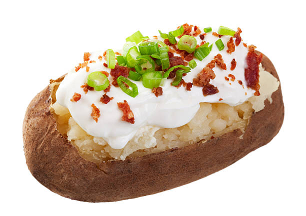

Ingredients for 4 Portions
- 4 (really) big potatos
- 1 bunch of parsley
- 1 bunch of spring onion
- Rosemary
- 500g of curd cheese
- 3 table spoons of lemon juice
- Salt and pepper
Cooking-Steps:
- Preheat oven to 180°
- Wash your potatos and dry them - stab them a bunch of times with a fork.
- Lightly cover your potatos in oil and bake them for 50-60 minutes on a baking sheet.
- Prepare your curd cheese in a bowl
- Add your chopped parsley, spring onion and seasonings to the curd cheese and give it a good mix.
- Add some lemon juice to the mix and mix again.
- Put in seasonings to your taste and top it off on your potatos!
- Enjoy your baked potato!